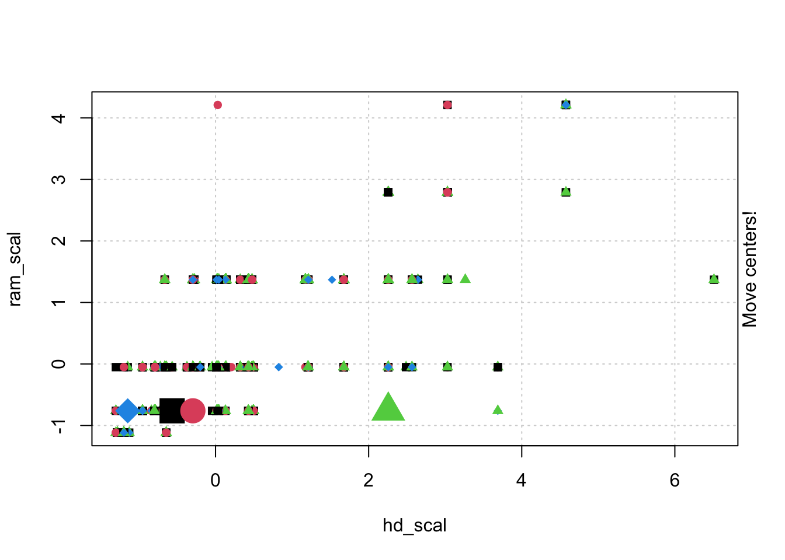
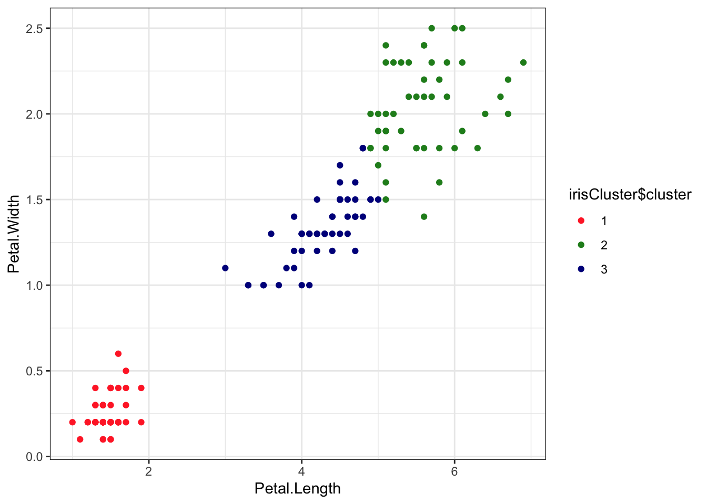
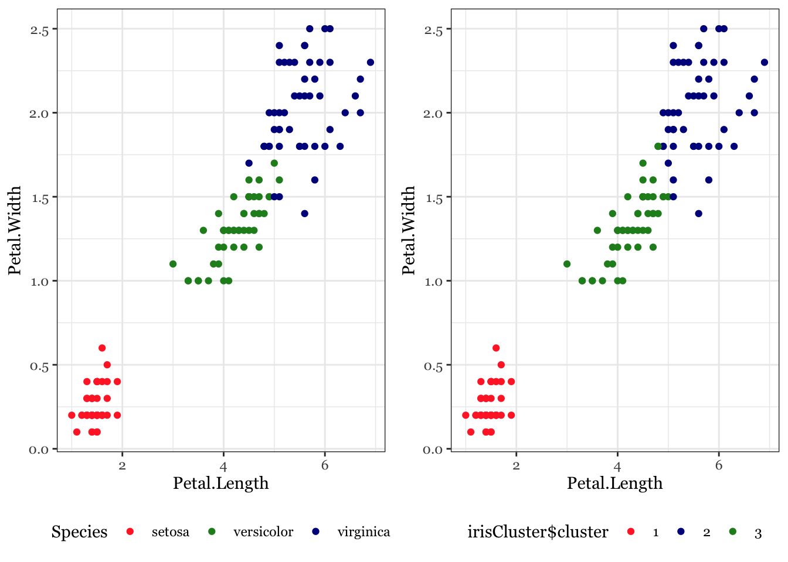

## Gentle Machine Learning
## Clustering: K-means, Hierarchical Clustering
## Computer purchase example: Animated illustration
## Adapted from Guru99 tutorial (https://www.guru99.com/r-k-means-clustering.html)
## Dataset: characteristics of computers purchased.
## Variables used: RAM size, Harddrive size
library(dplyr)Warning: package 'dplyr' was built under R version 4.2.3
Attaching package: 'dplyr'The following objects are masked from 'package:stats':
filter, lagThe following objects are masked from 'package:base':
intersect, setdiff, setequal, unionlibrary(ggplot2)Warning: package 'ggplot2' was built under R version 4.2.3library(RColorBrewer)
computers = read.csv("https://raw.githubusercontent.com/guru99-edu/R-Programming/master/computers.csv")
# Only retain two variables for illustration
rescaled_comp <- computers[4:5] %>%
mutate(hd_scal = scale(hd),
ram_scal = scale(ram)) %>%
select(c(hd_scal, ram_scal))
ggplot(data = rescaled_comp, aes(x = hd_scal, y = ram_scal)) +
geom_point(pch=20, col = "blue") + theme_bw() +
labs(x = "Hard drive size (Scaled)", y ="RAM size (Scaled)" ) +
theme(text = element_text(family="Georgia")) 
# install.packages("animation")
library(animation)
set.seed(2345)
library(animation)
# Animate the K-mean clustering process, cluster no. = 4
kmeans.ani(rescaled_comp[1:2], centers = 4, pch = 15:18, col = 1:4) 


## Iris example
# Without grouping by species
ggplot(iris, aes(Petal.Length, Petal.Width)) + geom_point() +
theme_bw() +
scale_color_manual(values=c("firebrick1","forestgreen","darkblue"))
# With grouping by species
ggplot(iris, aes(Petal.Length, Petal.Width, color = Species)) + geom_point() +
theme_bw() +
scale_color_manual(values=c("firebrick1","forestgreen","darkblue"))
# Check k-means clusters
## Starting with three clusters and 20 initial configurations
set.seed(20)
irisCluster <- kmeans(iris[, 3:4], 3, nstart = 20)
irisClusterK-means clustering with 3 clusters of sizes 50, 48, 52
Cluster means:
Petal.Length Petal.Width
1 1.462000 0.246000
2 5.595833 2.037500
3 4.269231 1.342308
Clustering vector:
[1] 1 1 1 1 1 1 1 1 1 1 1 1 1 1 1 1 1 1 1 1 1 1 1 1 1 1 1 1 1 1 1 1 1 1 1 1 1
[38] 1 1 1 1 1 1 1 1 1 1 1 1 1 3 3 3 3 3 3 3 3 3 3 3 3 3 3 3 3 3 3 3 3 3 3 3 3
[75] 3 3 3 2 3 3 3 3 3 2 3 3 3 3 3 3 3 3 3 3 3 3 3 3 3 3 2 2 2 2 2 2 3 2 2 2 2
[112] 2 2 2 2 2 2 2 2 3 2 2 2 2 2 2 3 2 2 2 2 2 2 2 2 2 2 2 3 2 2 2 2 2 2 2 2 2
[149] 2 2
Within cluster sum of squares by cluster:
[1] 2.02200 16.29167 13.05769
(between_SS / total_SS = 94.3 %)
Available components:
[1] "cluster" "centers" "totss" "withinss" "tot.withinss"
[6] "betweenss" "size" "iter" "ifault" class(irisCluster$cluster)[1] "integer"# Confusion matrix
table(irisCluster$cluster, iris$Species)
setosa versicolor virginica
1 50 0 0
2 0 2 46
3 0 48 4irisCluster$cluster <- as.factor(irisCluster$cluster)
ggplot(iris, aes(Petal.Length, Petal.Width, color = irisCluster$cluster)) + geom_point() +
scale_color_manual(values=c("firebrick1","forestgreen","darkblue")) +
theme_bw()
actual = ggplot(iris, aes(Petal.Length, Petal.Width, color = Species)) + geom_point() +
theme_bw() +
scale_color_manual(values=c("firebrick1","forestgreen","darkblue")) +
theme(legend.position="bottom") +
theme(text = element_text(family="Georgia"))
kmc = ggplot(iris, aes(Petal.Length, Petal.Width, color = irisCluster$cluster)) + geom_point() +
theme_bw() +
scale_color_manual(values=c("firebrick1", "darkblue", "forestgreen")) +
theme(legend.position="bottom") +
theme(text = element_text(family="Georgia"))
library(grid)
library(gridExtra)
Attaching package: 'gridExtra'The following object is masked from 'package:dplyr':
combinegrid.arrange(arrangeGrob(actual, kmc, ncol=2, widths=c(1,1)), nrow=1)
## Wine example
# install.packages("rattle.data")
# wine dataset contains the results of a chemical analysis of wines
# grown in a specific area of Italy. Three types of wine are represented in the
# 178 samples, with the results of 13 chemical analyses recorded for each sample.
# The Type variable has been transformed into a categorical variable.
# Variables used in this example
# Alcohol
# Malic: Malic acid
# Ash
# Create a function to compute and plot total within-cluster sum of square (withinss)
wssplot <- function(data, nc=15, seed=1234){
wss <- (nrow(data)-1)*sum(apply(data,2,var))
for (i in 2:nc){
set.seed(seed)
wss[i] <- sum(kmeans(data, centers=i)$withinss)}
plot(1:nc, wss, type="b", xlab="Number of Clusters",
ylab="Within groups sum of squares")
}
## Use the factoextra package to do more
# install.packages("factoextra")
## Hierarchical Clustering
## Dataset: USArrests
# install.packages("cluster")
arrest.hc <- USArrests %>%
scale() %>% # Scale the data
dist(method = "euclidean") %>% # Compute dissimilarity matrix
hclust(method = "ward.D2") # Compute hierarchical clustering